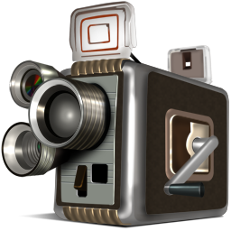
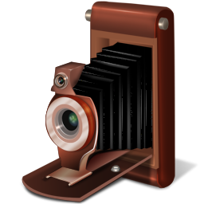

-

2008
1. 若爱，请深爱。 放弃，请彻底。 等待，本身就是一个错误。
-

2009
2. 看的开一点，伤的就会少一点。
-

2010
3. 许多事情，总是在经历以后才会懂得，一如感情：错过了，遗憾了，才知道其实生活并不需要这么多无谓的执著。
-
2011
4. 秋天，残忍的季节，成熟不成熟的都要一同收割。一切都会在秋冬交替的刹那间随风而逝，唯有那一泓鲜亮山溪般的记忆永远在我心中哗哗流动...
-

2012
5. 珍惜手边的幸福，不要等到失去以后才悔不当初，也许，你的一生也就只有那么一个人会真正用心在你身上。
-

2013
6. 人生就像一列车，车上总有形形色色的人穿梭往来。你也可能会在车上遇到很多你以为有缘分的人，但是车也会有停下来的时候，总会有人从人生这列车上上下下，当你下去的时候你挥挥手，一转身你能记住的只有回家的路。
-

2014
7. 有的人你看了一辈子，却忽视了一辈子。有的人你看了一眼，却影响到你的一生。有的人热情的为你而快乐，却被你冷落。有的人让你拥有短暂的开心，却得到你思绪的连锁。有的人一厢情愿了N年，却被你拒绝了N年。8. 不要欠朋友太多东西，因为你可能永远都没有机会还他。